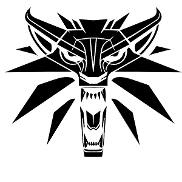
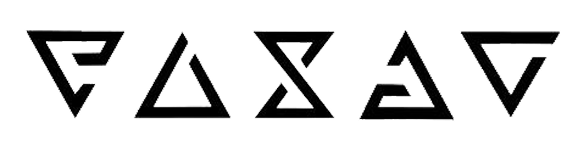

Uma das feiticeiras mais poderosas do Continente, Yennefer é ambiciosa, orgulhosa e marcada por um passado trágico. Seu caminho está ligado a Geralt por um desejo mágico, resultando em um relacionamento complexo, apaixonado e muitas vezes caótico. Ela é a figura materna de Ciri e fará absolutamente tudo para proteger sua família.
GERALT DE



RIVIA
Geralt é um Bruxo, um caçador de monstros profissional. Ele não nasceu assim: foi submetido a dolorosas mutações químicas (as Provas das Ervas) quando criança, ganhando força, reflexos e sentidos sobre-humanos para sobreviver ao seu ofício.
Ele foi treinado na fortaleza de Kaer Morhen, o lar da Escola do Lobo. Lá, ele dominou a esgrima, a alquimia e o conhecimento do Bestiário, tornando-se um dos espadachins mais temidos e respeitados do Continente.
Seus icônicos cabelos brancos não são de velhice. Eles são a marca de mutações experimentais extras que ele suportou. Essa aparência distinta lhe rendeu o apelido de "Lobo Branco" (ou "Gwynbleidd" na Língua Antiga).
Geralt carrega duas espadas: uma de aço para humanos e bestas comuns, e uma de prata para monstros e criaturas mágicas. Ele também usa "Sinais", formas simples de magia de combate, como Aard (impacto telecinético) e Igni (fogo).
Em um mundo dividido pela guerra e preconceito, Geralt luta para se manter neutro. Ele segue seu próprio código moral, muitas vezes sendo forçado a escolher o "mal menor" em situações onde não existe uma escolha "boa".